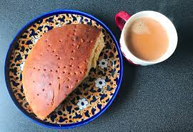
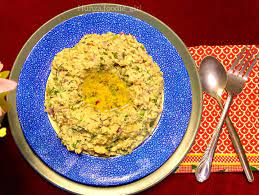
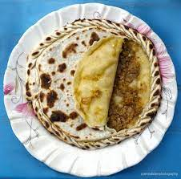
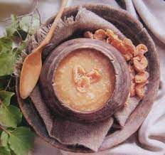

| Meal Type | Recipe Name | Image | Instructions | Ingredients |
|---|---|---|---|---|
| Breakfast | Namkeen Chai with traditional Hunzai Bread |  | Boil 2 cups of water in a saucepan. Add 1/2 teaspoon of tea leaves and 1/2 teaspoon of salt. Boil for 5 minutes. Strain the tea into a cup and serve with traditional Hunzai bread. |
Salt, Milk, Water, Tea |
| Lunch | Mulida with lassi |  | Sauté onions until translucent. Add garlic, ginger, and green chilies; sauté briefly, Brown minced meat. Add chopped tomatoes; cook until soft.Add salt, red chili powder, and turmeric; cook for 5 minutes. Add water and cook until the meat is tender. Garnish with coriander leaves and serve with lassi. |
Onions, Garlic, Ginger, Green chilies, Minced meat, Tomatoes, Salt, Red chili powder, Turmeric, Water, Coriander leaves, Lassi |
| Dinner | Chapshuro |  | Combine flour, water, and salt in a bowl. Knead the dough until smooth. Divide the dough into 4 equal pieces. Roll each piece into a 6-inch circle. Place 1/4 of the meat mixture in the center of each circle. Pinch the edges of the dough together to form a pouch. Heat a skillet over medium heat. Cook the pouches until golden brown on both sides. Serve with traditional Hunzai tea. |
Flour, Water, Salt, Meat |
| Dessert | Sweet Apricot Soup |  | Simmer apricots in water until soft (20-30 mins). Return to pot, add honey, cinnamon, and cardamom. Simmer for 5-10 mins. Serve warm or chilled | 1 cup dried apricots,4 cups water, 2 tbsp honey, 1/2 tsp ground cinnamon, 1/4 tsp ground cardamom |